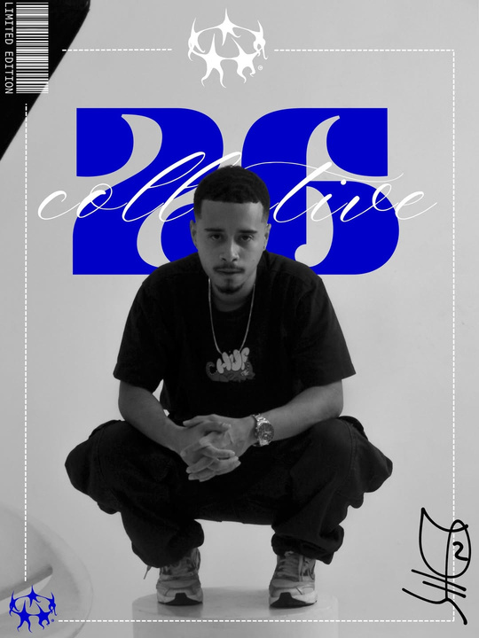

Direção · Roteiro · Fotografia · Edição · Cor

Ninguém me entregou o caminho. Aprendi na prática — câmera na mão, tentativa, erro e insistência.
Comecei fotografando em 2016. Em 2019, deixei o sonho de lado e entrei na tecnologia. Mas o audiovisual nunca foi embora: em 2023 ele me chamou de volta, e eu não consegui dizer não.
Hoje vivo nos dois mundos — e é isso que me diferencia. A tecnologia me deu método, processo e visão; o audiovisual me dá o motivo. Da ideia à cor, cuido de cada etapa.
Sou Danilo Chaves — DVNILLO. Dirijo o 26 Collective.
Sigo aprendendo com quem já está onde quero chegar: sou aluno da Reclearning e aluno vitalício da SAND.